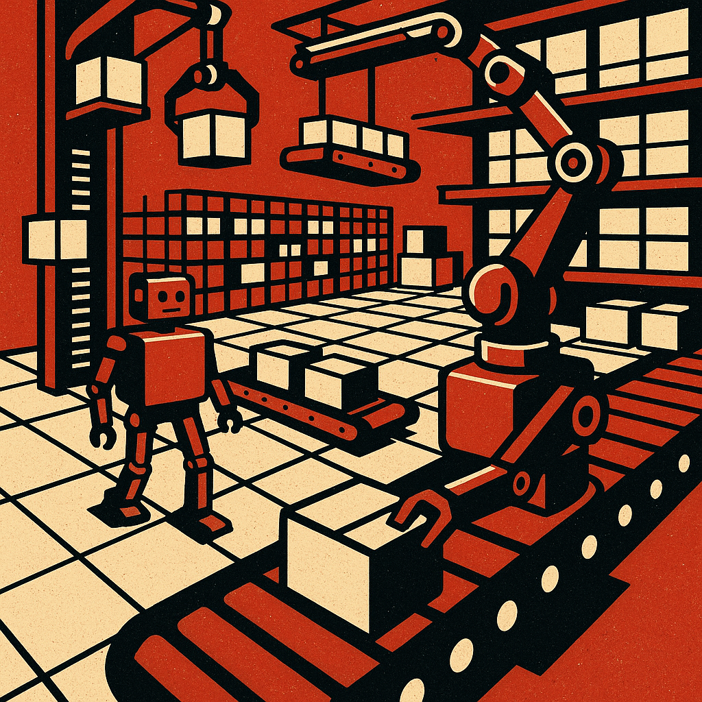

01
Understand the shift
Start with the main explainer if you want the big picture on why robotics is becoming commercially more serious now.
Read ExplainerA sharper guide to where robotics is becoming real, useful, and economically hard to ignore.
Era of Robotics is built for people trying to understand what the industry is actually for, which sectors are gaining real traction, and how to tell the difference between a machine with commercial gravity and a machine with a good marketing reel.
The site works best when it acts like a clear hub. Pick the lane that matches your question, and the rest of the experience gets dramatically less messy.
Start with the main explainer if you want the big picture on why robotics is becoming commercially more serious now.
Read ExplainerGo to the tool layer if you need to judge readiness, compare costs, or pressure-test a deployment idea.
Open ToolsUse the reports hub if you want shorter, topic-specific downloads tied to warehouse robotics, economics, and humanoids.
Browse ReportsGo to the resources page if you want a field map covering learning, tooling, platforms, and industry signals.
Open ResourcesIf you are new here, these are the three most useful entry points: the thesis, the tools, and the downloadable report layer.
A plainspoken explanation of what changed, what is still misunderstood, and why the economics are becoming harder to ignore.
Read ItA practical decision layer for people evaluating whether automation makes sense in the real world.
Use ThemA growing library of downloadable HTML-and-PDF briefings for readers who want the compressed version of specific topics.
View LibraryRobotics is becoming an economic and operational question, not just a technical one. That means people need more than wow-factor clips and vague promises. They need ways to think about sectors, use cases, deployment logic, labor pressure, and where the real traction is forming.
Era of Robotics is built to help with that. The aim is practical understanding: what is happening, why it matters, what to read first, what to calculate next, and which brief to download when you want a sharper summary.
